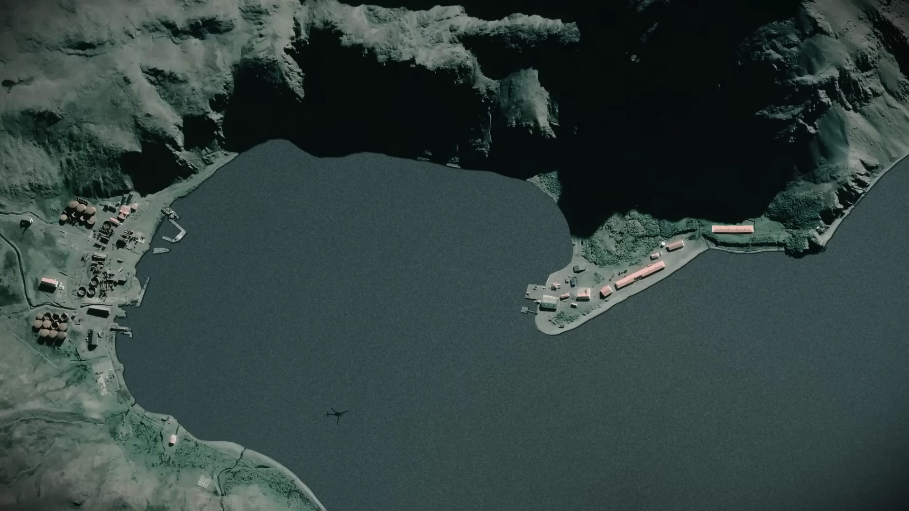
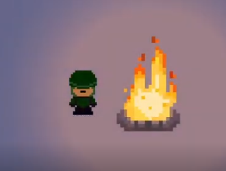
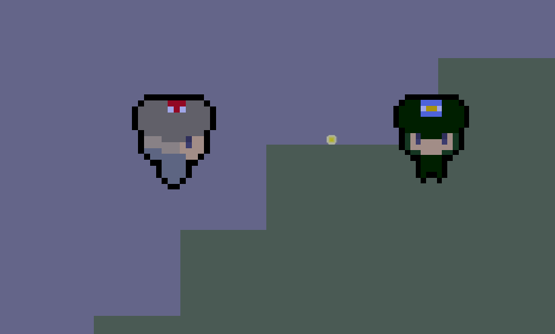
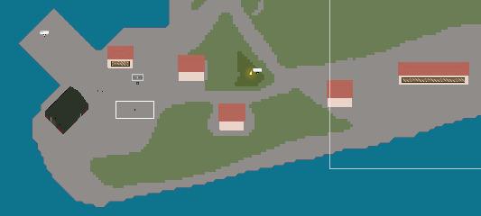
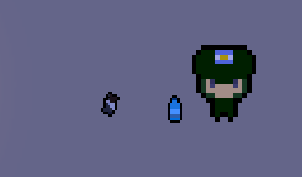
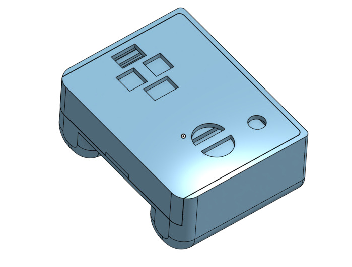
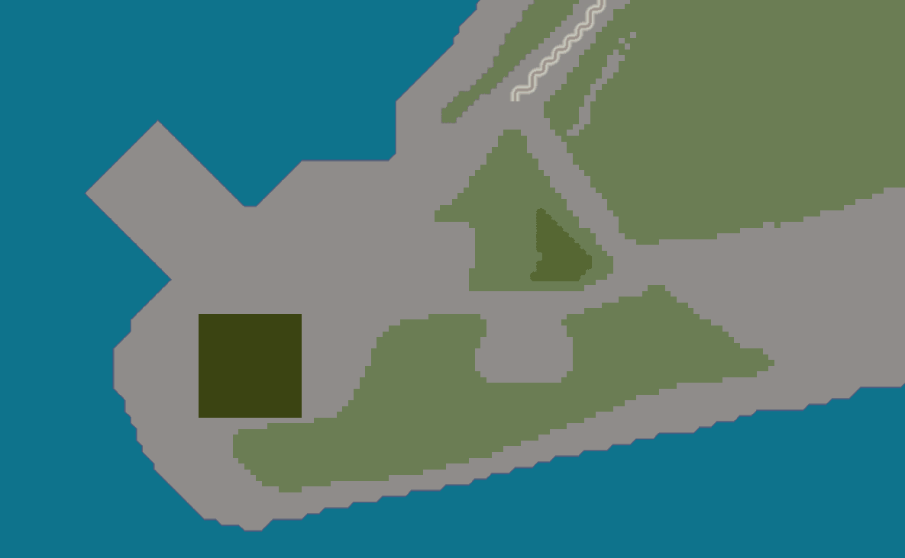

Un videojuego indie táctico y de supervivencia con estética Pixel Art. Sumérgete en la recreación histórica de la toma de la base científica King Edward y experimenta el rigor del frente en la Guerra de Malvinas.
"Malvinas: Voces del Frente" es un proyecto desarrollado de forma independiente que busca reflejar la vivencia, el rigor y las historias del conflicto Argentino e Ingles.
Mediante una estética en pixel art cuidadosamente elaborada y mecánicas de supervivencia, el juego transporta al jugador a escenarios ambientados en el archipiélago y las islas del Atlántico Sur.
Esta primera versión demo permite probar de forma anticipada las mecánicas principales en un nivel completo, abarcando la toma estratégica de la base científica King Edward.
Recreación de terrenos, costas e instalaciones del entorno insular.
Diseño del nivel basado en hechos reales de la guerra de las Malvinas.
El clima subantártico es un enemigo constante; mantener el calor es vital.
Efectos de audio envolventes y banda sonora original retro.
La demo jugable te sitúa al mando en las frías costas de Grytviken (Islas Georgias del Sur). Tu objetivo es asegurar la base científica King Edward sobreviviendo a las condiciones climaticas y la escasez de recursos.
Coordenadas: 54°16′S 36°30′W • Condición Climática: Vientos fuertes, visibilidad reducida por nieve.

* El mapa del juego ha sido modelado respetando la topografía costera.
Echa un vistazo al avance en vídeo con secuencias del desarrollo y mecánicas de juego en acción.
HAZ CLIC PARA VER EN PANTALLA COMPLETA
Diseñado para ofrecer una mejor experiencia.
Estetica en pixel art para una experiencia mas amigable.
Encuentra puntos de calor para evitar el congelamiento y perder salud.
Aprovecha las coberturas del terreno, la oscuridad y el sonido para avanzar sin ser detectado.
Mando diseñado exclusivamente para una mejor experiencia en el juego.






Incluye el nivel 1 completo ("Toma de la Base Científica Grytviken"). No requiere instalación compleja, descarga y ejecuta en tu PC con Windows.
| Sistema Operativo: | Windows 10 / 11 (64-bit) |
|---|---|
| Procesador: | Intel i3 / AMD Ryzen 3 |
| Memoria RAM: | 4 GB RAM |
| Gráficos: | DirectX 11 compatible (Intel HD 4000+) |
| Almacenamiento: | 200 MB de espacio disponible |
.exe o comprimido
.zip.Malvinas_VocesDelFrente.exe y ¡disfruta de la demo!